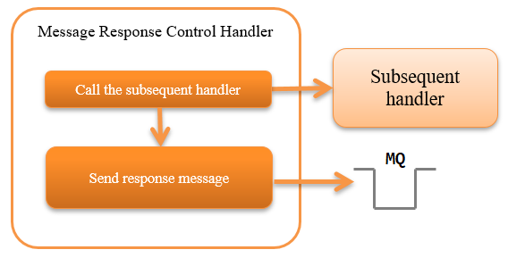

6.8.3. Message Response Control Handler¶
Table of contents
This handler creates a response message and returns (sends) it to the connection destination based on the results of the ResponseMessage object, which is the processing result of the subsequent handler.
This handler performs the following process:
- Sends the response message
The process flow is as follows.
{kind=link}
6.8.3.2. Module list¶
<dependency>
<groupId>com.nablarch.framework</groupId>
<artifactId>nablarch-fw-messaging</artifactId>
</dependency>
6.8.3.3. Constraints¶
- Configure this handler after the Messaging Context Management Handler
- This handler sends the response message (puts to the message queue) Therefore it is necessary to configure this handler after Messaging Context Management Handler , which establishes a connection to MQ.
- Positional relationship with the Transaction Control Handler
The positional relationship with Transaction Control Handler changes depending on whether a two-phase commit is used.
- Two-phase commit is used
- Collates and commits the database transaction and message queue (JMS) transaction together in the transaction manager. Therefore, a response message is required to be sent before the transaction control, and this handler has to be configured after the Transaction Control Handler .
- Two-phase commit is not used
- It is necessary to determine the result of the business process before this handler sends a response. Therefore, the Transaction Control Handler must be configured after this handler.
6.8.3.4. Configuring the framework control header¶
When changing the definition of the framework control header in the response message, the definition of the framework control header extended in the project has to be configured. If it is not configured, the default StandardFwHeaderDefinition will be used.
For details of the framework control header, see framework control header .
A configuration example is shown below.
<component class="nablarch.fw.messaging.handler.MessageReplyHandler">
<!-- Configuring the framework control header -->
<property name="fwHeaderDefinition">
<component class="sample.SampleFwHeaderDefinition" />
</property>
</component>